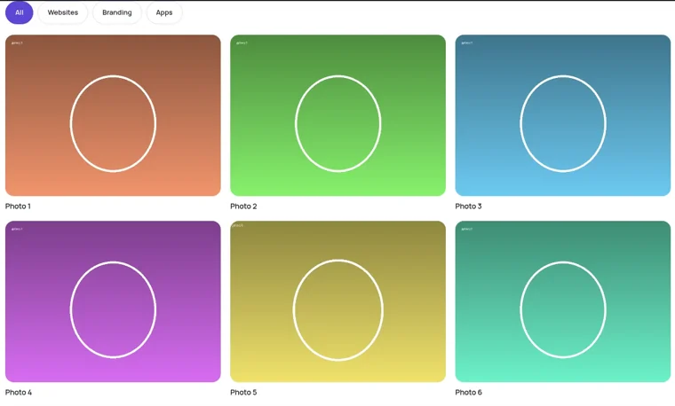
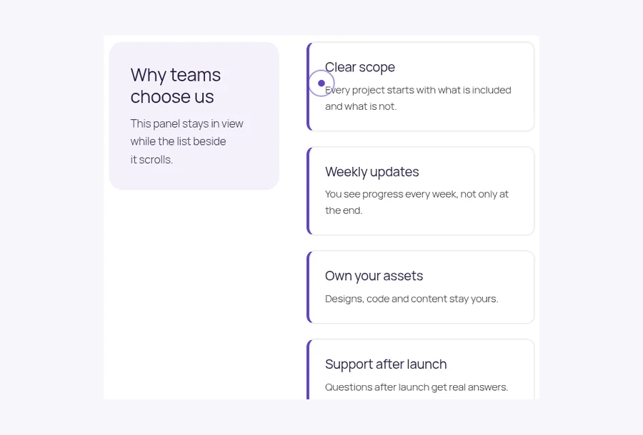
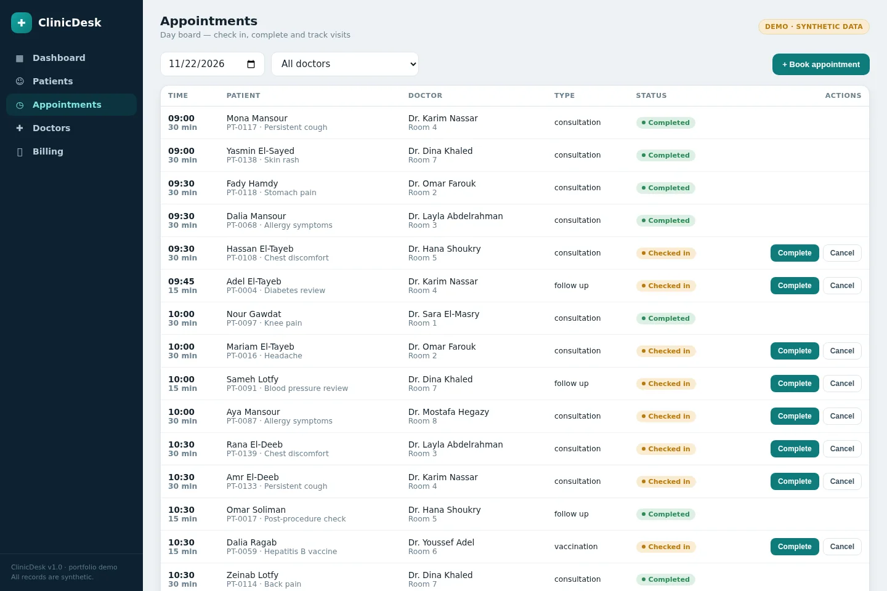
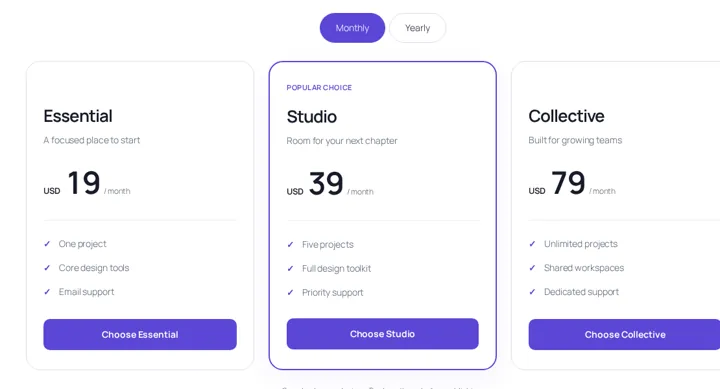
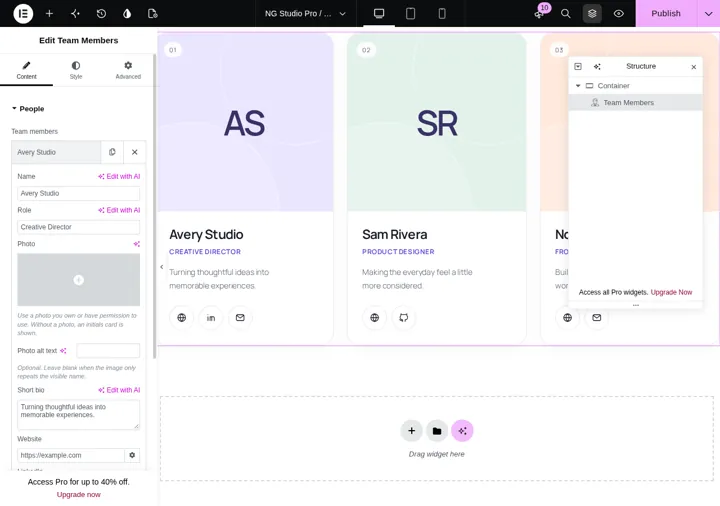

NG Studio Pro
An original Elementor add-on. The latest release, v0.18.0, includes 80 widgets, with a 100-widget roadmap.
INDEPENDENT WEB DEVELOPER
I'm Nada Gamal. I shape WordPress websites and practical web tools, from a clear first screen to the details behind it.
WORDPRESS / CUSTOM CODE / AUTOMATION
REAL BUILDS / SELECTED SCREENS


Northwind Admin + NovaLearn
Working demos. Synthetic data.
01 / SELECTED BUILDS
Five projects I would start with: a released WordPress toolkit, client content work, and three custom web applications. The full list is on the Services page.
An original Elementor add-on. The latest release, v0.18.0, includes 80 widgets, with a 100-widget roadmap.
Ten Arabic mental health articles for a medical center, edited and optimised in WordPress with Yoast SEO. Content preparation and on-page SEO only.
Offline-first bilingual clinic app: patient self-booking, dental chart, X-rays, branded prescriptions, installments, profit reports and roles. Private demo data per browser.
Content automation for several brands, with a human approval step and an Arabic interface. Hosted demo is interactive on shared demo data.
Law firm case management: clients, cases with stages from intake to appeal, a court sessions calendar with outcome logging, a documents register, time tracking at lawyer rates, invoices and retainers, deadlines and limitation reminders, tasks per staff member, and a read-only client portal, in Arabic and English.
Screenshots show the actual builds. Demo dashboards use synthetic records, not client results. Production limits are recorded on each project page.
INSIDE NG STUDIO PRO
80 built widgets in v0.18.0. Captures from v0.15.0, from image galleries to team cards. The 100-widget collection remains the roadmap.


Historical fixtures. These show earlier widget styling, not the current default-image audit.








Real plugin test captures, not client websites. Names, testimonials, prices, products and metrics are sample content. Static images do not demonstrate every interactive state.

02 / A LITTLE ABOUT ME
I care about the part where an idea becomes something people can actually use.
I'm a freelance software and WordPress engineer, working independently since 2024. My practice covers custom WordPress development, PHP/MySQL applications, technical SEO, performance work and security cleanup.
I trained in software engineering at ITI's Qena branch in March 2024. My earlier background is in media and journalism. Today, I bring that attention to communication into the way I structure content and build interfaces.
My toolkit includes Bricks, Blocksy, Elementor Pro, HTML, CSS, JavaScript, PHP and MySQL. I'm also exploring AI workflows, RAG and MCP integrations.
03 / HOW I CAN HELP
From a focused business website to a tailored digital tool, the approach starts with what you need, not a preset template.

Custom WordPress websites with Bricks, Blocksy and Elementor Pro. Responsive interfaces, custom PHP/CSS extensions and thoughtful content structures.
↗
Purpose-built interfaces and PHP/MySQL web applications. Responsive front ends, clear data flows and custom functionality without unnecessary plugin bloat.
↗
WordPress remediation, malware and rogue-user cleanup, WebP assets, caching and technical SEO. Practical fixes, with scope and handover notes kept clear.
↗A CLEAR WAY TO WORK
A working approach, not a promise of a fixed timeline or a one-size-fits-all package.
Audience, content, constraints and what the first release needs to do.
Review real screens and working flows. Keep decisions and limits visible.
Responsive layouts, keyboard paths and the actual functions in scope.
Source, setup and next steps. Know what is ready and what still needs work.
YOU ARE LOOKING AT ANOTHER BUILD
Static HTML, CSS and JavaScript. Local images and fonts, progressive enhancements and no analytics. The contact brief stays on your device. Directed by Nada.
04 / YOUR NEXT PROJECT
For a project or a role, share the context, the people it should help and the scope you have in mind. We can start with the essentials and work out a useful next step.
nadagamal8510@gmail.com ↗Prefer to gather your thoughts first? Download a brief, then share it by email. The form does not send a message.